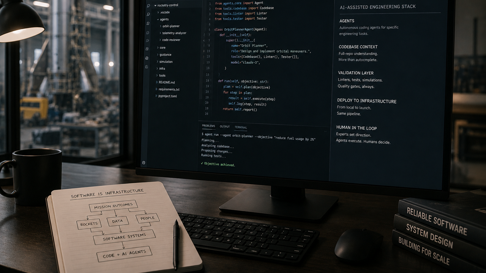

Image captionWorkspace desk with AI-assisted coding on screen, open notebook on software infrastructure and engineering notes.
The signal
Cursor has become important because it sits directly inside the place where software is made, while xAI is pushing Grok as a general AI system that wants to be useful across work, search and coding contexts.1, 2 The larger point is already visible: AI coding tools are no longer a cute side market for developers who like shortcuts.
The SpaceX angle is why this belongs in the infrastructure conversation, even without treating acquisition chatter as settled fact. SpaceX is a company where software, hardware, satellites, factories, launch systems and operations all meet in one unforgiving stack.3 If coding agents become useful in that kind of environment, the story is no longer only "developer productivity." It is how software work gets pulled into hard infrastructure.
That sounds obvious, almost boring, until the editor becomes a distribution point, the coding agent becomes a training surface and the workflow becomes a data loop. The code interface is now strategic enough that every serious AI company has to care about it.
This is also why the "vibe coding" argument needs better language. Blindly accepting whatever a model writes is still a bad idea. But expert-guided coding, where a human understands the domain, reviews the output, shapes the prompt and keeps architectural taste in the loop, is a different thing. That is not magic. It is leverage with a supervisor. The better term may be directed AI development: the human still owns judgment, while the model changes speed, reach and rough draft capacity.4
The risk
The uncomfortable part is concentration. If the strongest coding environments, model labs, compute providers and distribution platforms keep folding into each other, the software supply chain gets faster but also narrower. A developer may feel like they are choosing a tool. In reality, they may be choosing a stack of incentives: which model gets telemetry, which company shapes defaults, which ecosystem sets prices and which agent decides what "good code" looks like.
That does not make the shift bad by default. It makes it worth watching. Cursor's product direction and the wider agent market show why coding assistants are moving from novelty to operating layer. If Grok or any other frontier model wants to compete harder in coding and general computer use, it has to get closer to the work itself. The appeal is obvious. The governance question follows right behind it.
The Appeal
- Coding agents can make capable people dramatically faster.
- The best version is supervised leverage, not blind delegation.
- The public question is who controls the new software interface.
The optimistic read is simple enough: better coding agents can help small teams build more, help specialists escape repetitive work and make software feel less gated by boilerplate. That appeal is real. The balanced version keeps the hard part in frame: if the interface to making software becomes a strategic asset, then access, auditability and competition matter more, not less.